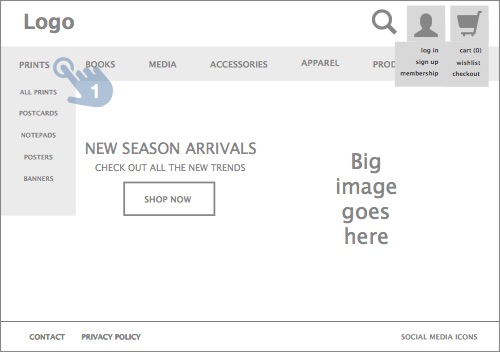
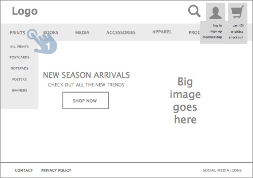
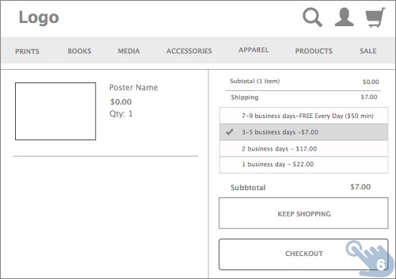
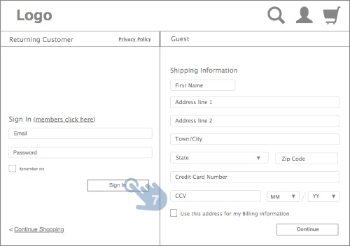
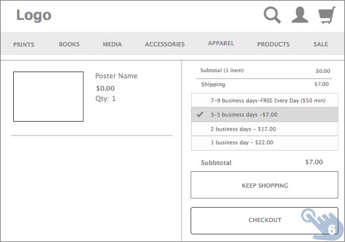
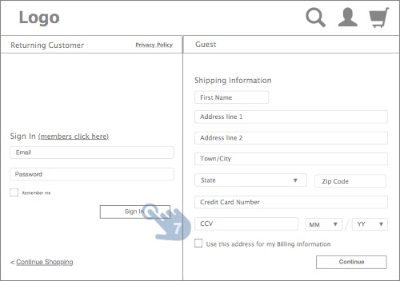

MOCA Website - Checkout Workflow
The Museum of Contemporary Art, Los Angeles is a contemporary art museum with three locations in greater Los Angeles, California. The main branch is located on Grand Avenue in Downtown Los Angeles, near Walt Disney Concert Hall.
Objectives
The goal of this project was to learn the lifecycle of a designing process from research to final interactive prototypes which included sitemaps, navigation schema, user flows, and checkout workflow.
My role
Redesign and reorganize home page and site navigation. Create new checkout workflow.
Tools
As the research is one of the most important step in creating a persona, for this project I have conducted a user interview to better understand the targeted audience.
Kevin
Who is he?
- 32 years old
- Photographer
- Single
- College graduate
What he needs?
- Find a product in reasonable amount of time
- Ability to reuse previously payment option
- Be able to track order
To label categories and build the navigation, I've used card sorting method. It helped me to build the structure of my website and made the navigation logical and intuitive.

As a user, I want to be able to search for a product, add it to shopping cart, and make a purchaise.
 



 


